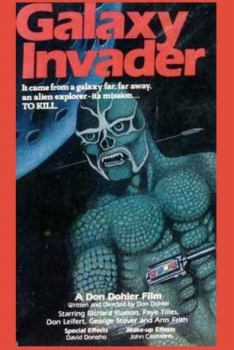
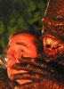
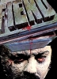

Country:United States, 79 minutes
Spoken languages:English
Genres:Horror, Sci-Fi
Director(s):Don Dohler
Writer(s):Don Dohler, Anne Frith, David W. Donoho
Video Codec:Unknown
Number: 1489


Certification:PG
Storyline:
An alien is hunted by a gang of drunken hillbillies who saw him crash-land his spaceship.
Cast:  

Medium: Original DVD,
Comments: Part of: Sci-Fi Classics - 50 Movies & Part of: Midnight Madness - 20 Movie Collection
Loaned: No
Aspect ratio: Unknown